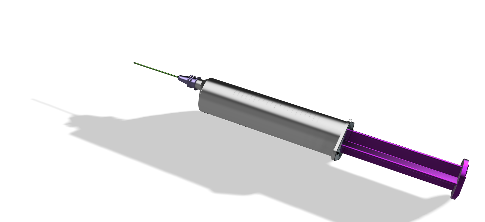
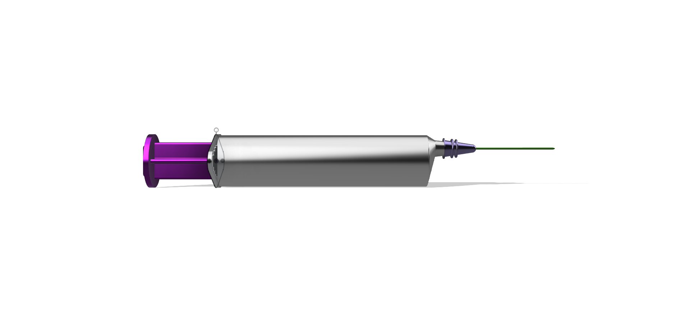

CAD PROJECT · 03
Syringe
Medical Device CAD Study

Modeling a precision medical device.
Modeled a medical syringe assembly to develop proficiency with parametric CAD, precision components, and multi-part assemblies.
The design includes a hollow barrel, sliding plunger, tapered tip, and ergonomic finger flanges.
Sliding Plunger
Modeled a plunger that slides through the syringe barrel to represent the dispensing mechanism.
Hollow Barrel
Created a hollow cylindrical barrel with realistic proportions for a functional syringe form.
Precision Geometry
Used revolved and filleted geometry to model the barrel, tip, plunger, and finger flanges.

